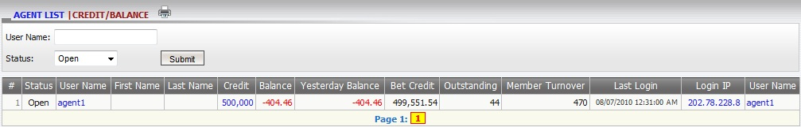
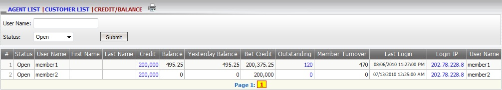

Credit/Balance
Definition:
The function is to show all necessary information regarding agent/member credit and balance such as:
- Status: open, closed, suspended or disabled.
- Credit: total agent credit given by master.
- Balance: total agent win/loss up to now including all transfer amount.
- Yesterday balance: total agent win/loss up to yesterday including all transfer amount.
- Bet credit: total available agent credit to give to his/her member.
- Outstanding: total agent earning amount on member running tickets.
- Member turnover: total betting amount on both running and settled tickets.
Futhermore, system also allows master to update agent given credit by clicking on Credit amount:

figure 1.1
To view all necessary information regarding member credit and balance, click on the Agent username (figure 1.2). Moreover, master is also allowed to:
- Update member given credit.
- View Member daily statement.

figure 1.2